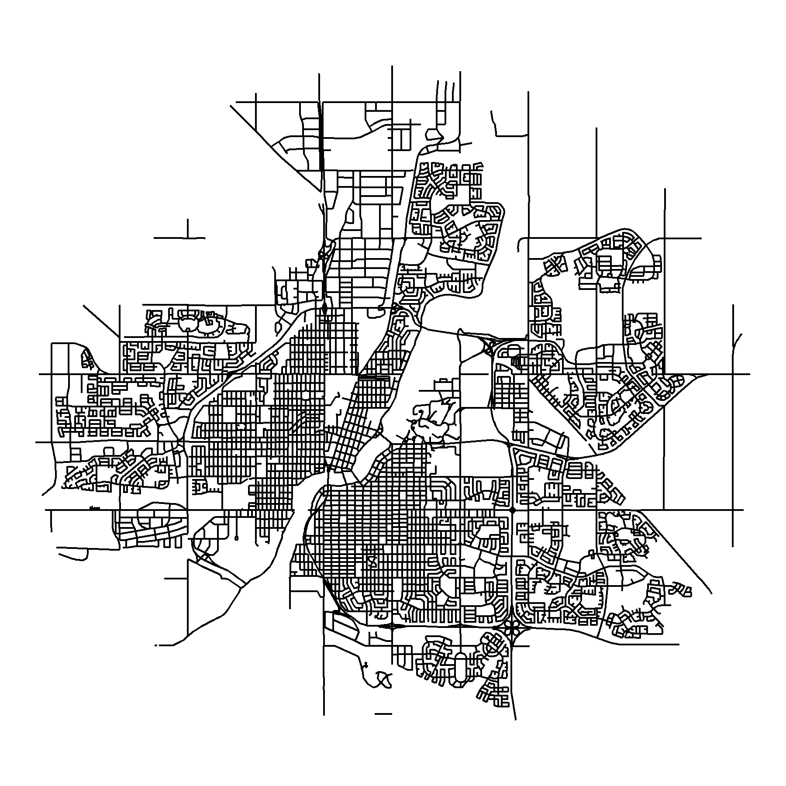
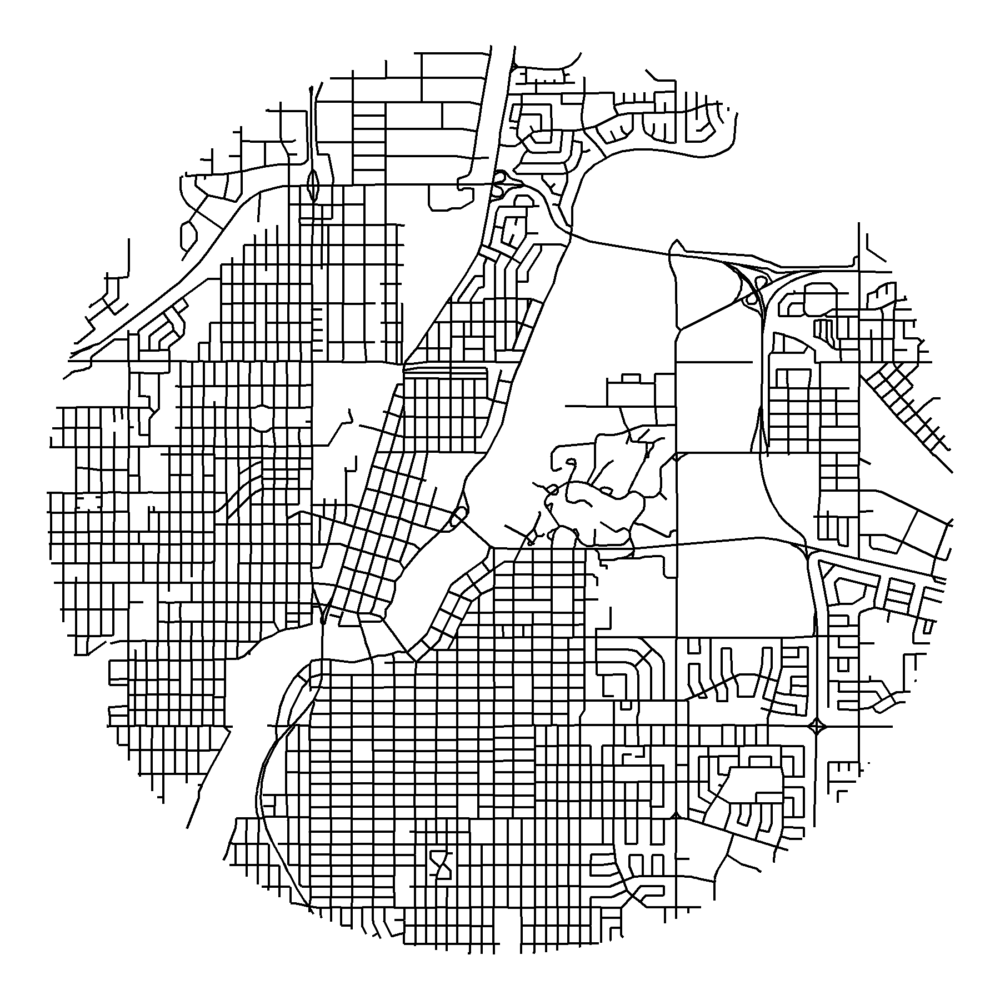
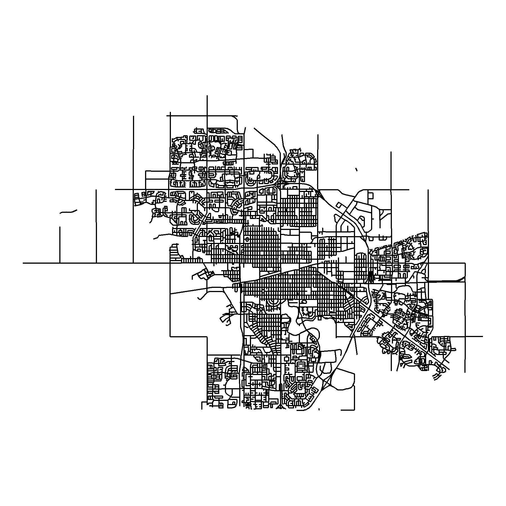
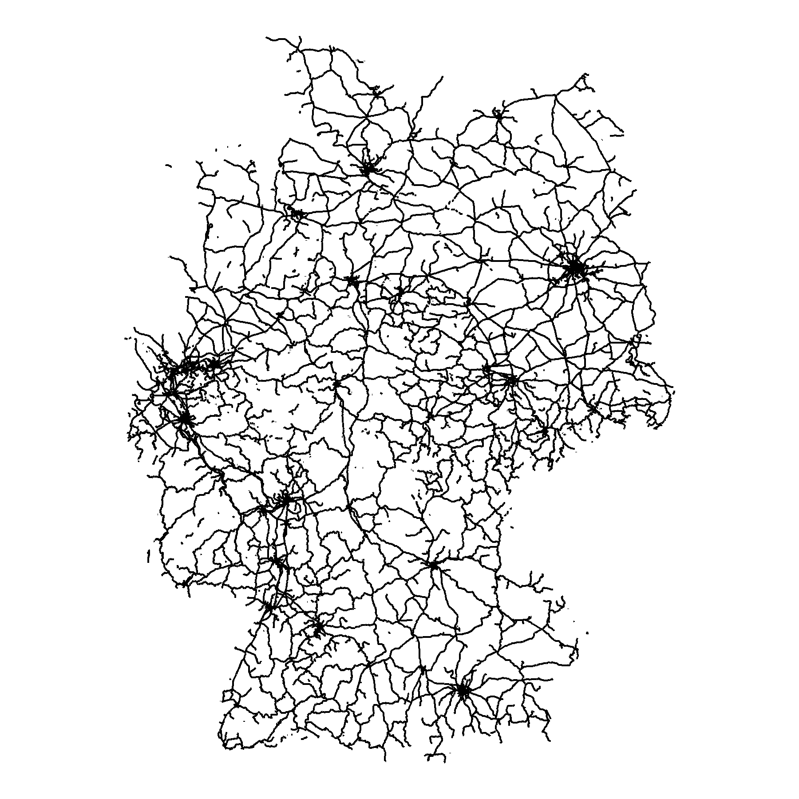

STATCAN road network files
https://www12.statcan.gc.ca/census-recensement/2011/geo/RNF-FRR/index-2011-eng.cfm?year=16
Germany rail roads
https://mapcruzin.com/free-germany-arcgis-maps-shapefiles.htm
My shape files
https://github.com/derekmichaelwright/dblogr/tree/master/content/dblogr/street_maps
# Load libraries
library(tidyverse)
library(sf)# STATCAN file
roads <- st_read("lrnf000r16a_e.shp")
# Filter cities
roads_saskatoon <- roads[roads$CSDNAME_L == "Saskatoon",]
roads_regina <- roads[roads$CSDNAME_L == "Regina",]
# Save
st_write(roads_saskatoon, "roads_saskatoon.shp")
st_write(roads_regina, "roads_regina.shp")
#
s_roads <- st_read("railways.shp")# Read file
s_roads <- st_read("roads_saskatoon.shp", quiet = T)
# Crop
s_roads2 <- st_intersection(s_roads, st_buffer(st_centroid(st_union(s_roads)), 8500))
# Plot
mp <- ggplot(s_roads2) +
geom_sf(color = "black") +
coord_sf(crs = st_crs(4326)) +
theme_void() +
theme(panel.grid.major = element_line("transparent"))
ggsave("roads_saskatoon.png", mp, bg = "transparent", width = 6, height = 6)
# Crop
s_roads2 <- st_intersection(s_roads, st_buffer(st_centroid(st_union(s_roads)), 4000))
# Plot
mp <- ggplot(s_roads2) +
geom_sf(color = "black") +
coord_sf(crs = st_crs(4326)) +
theme_void() +
theme(panel.grid.major = element_line("transparent"))
ggsave("roads_saskatoon_zoom.png", mp, bg = "transparent", width = 6, height = 6)
# Read file
r_roads <- st_read("roads_regina.shp", quiet = T)
# Crop
r_roads2 <- st_intersection(r_roads, st_buffer(st_centroid(st_union(r_roads)), 8000))
# Plot
mp <- ggplot(r_roads) +
geom_sf(color = "black") +
coord_sf(crs = st_crs(4326)) +
theme_void() +
theme(panel.grid.major = element_line("transparent"))
ggsave(filename = "roads_regina.png", mp, bg = "transparent", width = 6, height = 6)
# Read file
rail_roads <- st_read("railways.shp", quiet = T)
# Plot
mp <- ggplot(rail_roads) +
geom_sf(color = "black") +
coord_sf(crs = st_crs(4326)) +
theme_void() +
theme(panel.grid.major = element_line("transparent"))
ggsave("railroads_germany.png", mp, bg = "transparent", width = 6, height = 6)
© Derek Michael Wright www.dblogr.com/